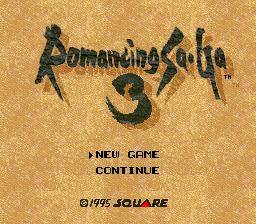
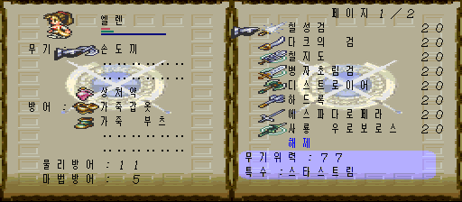
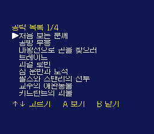
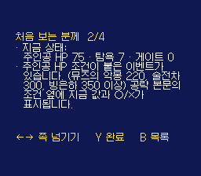
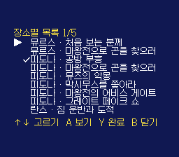
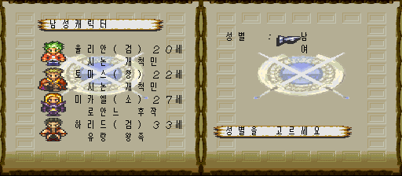
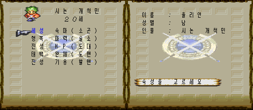
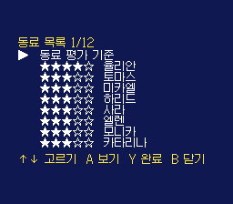
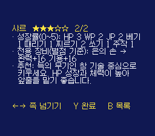
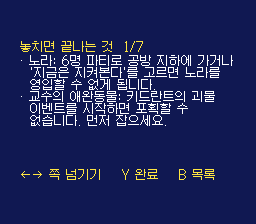

게임 소개
여덟 주인공 가운데 한 명을 골라 자유롭게 세계를 돌아다니는 스퀘어의 RPG 「로맨싱 사가 3」을 일본 팬이 크게 고친 개조판입니다. 로맨싱 사가 1·2, 사가 프론티어 등 다른 시리즈의 이벤트·동료·보스가 추가되고 난이도가 크게 올라갔습니다. 이 패치는 이미 나와 있는 한국어판 위에 치트만 더합니다. 개조판은 원작자의, 한국어 번역은 bokuno-rs3-ko 한국어 패치 제작자의 작업입니다.
- 원작
- 로맨싱 사가 3 (스퀘어, 슈퍼패미컴, 1995)
- 개조판
- ぼくのロマサガ3 Proto1.123
- 장르
- RPG
- 바탕
- 한국어 패치 v0.118 (8MB 롬)
치트 메뉴
필드에서 Select로 여는 게임 메뉴 맨 아래 「치트」를 고르면 치트 메뉴가 열립니다. 치트 메뉴를 닫으면 커서가 「치트」에 놓인 채 게임 메뉴로 돌아옵니다. 필드에서 L+R을 누른 채 Select를 눌러 바로 열 수도 있습니다(이때는 닫으면 필드로 돌아갑니다).
치트 메뉴에서는 ↑↓로 고르고 ←→(또는 A)로 바꾸며, B나 Start로 닫습니다. 메뉴가 열려 있는 동안 게임은 멈춥니다. 「치트」 항목이 들어갈 자리를 만들려고 게임 메뉴 오른쪽 목록을 8픽셀 위로 올렸습니다.
| 오럼 배율 | 1~5배. 전투와 이벤트로 얻는 오럼이 배율만큼 늘어납니다. 소지금 상한(30,000)을 넘는 이벤트 오럼은 원래 게임처럼 은행 쪽으로 넘어갑니다. |
|---|---|
| 성장 배율 | 1~5배. 전투가 끝난 뒤 성장 판정(HP·기술 레벨·술법 레벨·WP·JP)을 배율 횟수만큼 반복합니다. 한 번의 전투에서 여러 번 「업!」이 뜰 수 있습니다. |
| 번뜩임 배율 | 1~5배. 기술 번뜩임(閃き) 확률에 배율을 곱합니다(최대 100%). 개조판의 번뜩임 적성·난이도 규칙상 확률이 0인 기술은 그대로 0입니다. |
| HP·WP·JP 유지 | 켬이면 전투 중 파티의 HP·WP·JP를 계속 최대로 채웁니다. 이미 쓰러진 동료는 되살리지 않고, 최대 HP보다 큰 피해를 한 번에 받으면 쓰러질 수 있습니다. |
| LP 유지 | 켬이면 전투 중 LP를 최대로 유지합니다. 쓰러진 상태에서도 LP가 줄지 않습니다. |
| 이동속도 4배 | 켬이면 걷기와 Y 버튼 대시 모두 게임에 들어 있는 가장 빠른 이동 단계(4배)로 움직입니다. 칸 단위 이동 규칙은 그대로라 벽이나 이벤트 판정이 바뀌지 않습니다. 정확히 3배는 칸이 어긋나 만들 수 없습니다. |
| 조우 회피 | 켬이면 필드를 돌아다니는 잡몹 심볼에 닿아도 전투가 시작되지 않고 심볼이 사라집니다. 보스·고정 전투·이벤트로 강제되는 전투는 그대로 일어납니다. |
| 고정 장비 해제 | 켜 두면 장착 후 빨간 글씨로 바뀌어 뺄 수 없던 장비(칠지도·다크의 검·귀스타브의 검 같은 저주 표시 장비와 동료 고유의 고정 장비)를 장비 화면에서 「해제」할 수 있습니다. 끄면 원래대로 다시 잠깁니다. 동료 고유 장비(곰돌이·하니와 보디 등)를 빼면 그 동료가 약해질 수 있으니 필요할 때만 쓰세요. |
| 최강 장비 연동 | 켜 두면 장비 화면(게임 메뉴 「장비」)의 장착 목록이 소지품 대신 최강급 장비 21종(각 20개)으로 바뀝니다. 소지품 칸을 전혀 쓰지 않으므로 가방이 가득 차 있어도 상관없습니다. 장비 화면을 닫으면 원래 소지품으로 돌아오고, 바꿔 끼우면서 빠진 원래 장비는 소지품으로(가득 차 있으면 창고로) 돌려놓습니다. 최강 장비는 쓸 때마다 다시 20개로 채워집니다. 끄면 장비 화면도 평소처럼 소지품을 보여 줍니다. 무기 12종 — 검: 칠성검(77)·다크의 검(57) / 대검: 칠지도(74)·병자초림검(70) / 도끼: 디스트로이어(49) / 곤봉: 하드록(49) / 소검: 에스파다 로펠라(50) / 창: 사룡 우로보로스(50) / 활: 요이치의 활(53) / 총: 브류나크(88)·블런더버스(56) 방어구 9종 — 갑옷: 흑의 갈라드리엘 / 전신: 하니와 슈트 / 옷: 땅거미 로브 / 머리: 전신의 영관 / 팔: 도미넌트 글러브 / 발: 쇠나막신 / 방패: 듀라한의 방패 / 가더: 원더 뱅글 / 액세서리: 여신의 깃털·테트라포스 칠지도·다크의 검은 장착하면 빼지 못하는(빨간 글씨) 장비입니다. 뺄 때는 「고정 장비 해제」를 켜세요. |
| 최강 장비 창고로 | A를 누르면 최강 장비 21종을 가방이 아니라 창고에 9개씩 넣습니다(창고는 한 종류에 9개까지 — 게임 자체 한도). 가방 칸을 쓰지 않으므로 소지품이 꽉 차 있어도 빠지는 것이 없습니다. 창고 담당(피도나 등)에게서 꺼내 쓰세요. 이미 9개면 더 늘지 않습니다. |
| 공략 보기 | A(또는 ←→)로 열면 공략 목록이 나옵니다. ←→로 목록 쪽을 넘기면 이벤트별 목록(4쪽)과 장소별 목록(5쪽, 「피도나 · 공방 부흥」처럼 마을마다 할 수 있는 이벤트)이 이어집니다. 동료 정보는 따로 「동료 도감」 항목에서 봅니다. ↑↓로 고르고 A로 열며, 본문은 ←→로 쪽을 넘기고 B로 목록에 돌아옵니다. 목록에서 B를 누르면 치트 메뉴로 돌아갑니다. 완료 표시: 목록이나 본문에서 Y를 누르면 그 이벤트에 ✓가 붙습니다(다시 누르면 지움). 이벤트별·장소별 목록에 함께 보이고, 세이브 메모리(SRAM)의 게임이 쓰지 않는 자리에 저장되어 전원을 꺼도 남습니다. 세 세이브 슬롯이 같은 표시를 씁니다. 조건 표시: 본문의 「주인공 HP 220 이상」, 「탐욕 14 이하」, 「게이트 4개」 같은 조건 옆에 지금 값과 ○/×가 나옵니다(예: 「(지금 75 ×)」). 「처음 보는 분께」에는 주인공 HP·탐욕·닫은 게이트 수가 한 줄로 나옵니다. 동료 도감(치트 메뉴의 별도 항목, 12쪽): 가입할 수 있는 동료 106명을 별점(★1~5)과 함께 출신 시리즈 순으로 실었습니다. 동료마다 출신, 가입 장소·조건, 초기 능력(완력·기용·속도·체력·마력·의지·LP), 득의 무기·번뜩임·지휘 적성, 성장률, 전용 장비(코스프레)와 그 능력치 변화, 고정 장비·기술 소비 −1·명술 같은 특징, 육성 추천이 나옵니다. 능력치와 성장률은 롬 데이터에서 직접 읽었습니다. 별점은 초기 능력·성장률로 계산한 점수의 순위(LP는 성능이 아니라서 제외, 전용 장비가 있으면 낀 상태 기준 — 예: 샤르 은의 손 완력·기용 +16)(상위 10% ★5, 다음 20% ★4, 가운데 40% ★3, 다음 20% ★2, 하위 10% ★1)이며, 고유 기술·전용 장비·이벤트 성능은 넣지 않은 참고용입니다. 계산 방법은 목록 첫 항목 「동료 평가 기준」에 있습니다. 같은 내용을 웹에서 거르고 정렬해 볼 수 있는 동료 도감도 있습니다. 놓치면 끝나는 것: 순서를 어기면 다시 못 하게 되는 일 15가지를 한곳에 모았습니다. 개조판(Proto1.123) 기준 34개 항목의 발생 조건·순서·놓치기 쉬운 점을 담았습니다. |
| 새 게임 화면 | 치트 메뉴와 상관없이 항상 표시됩니다. 주인공 고르기: 이름 옆에 그 주인공의 득의 무기(예: 율리안(검), 카타리나(대)). 숙성 고르기: 별 이름 옆에 그 별이 올려 주는 능력치와, 같은 능력치를 함께 올려 주는 주무기 앞글자 — 세성 속마(소곤): 속도·마력 / 소검·곤봉, 형혹 마력(술소): 마력 / 술법·소검, 진성(왕자의 별) HP(도대): HP·완력 / 도끼·대검, 태백 완체(도맨): 완력·체력 / 도끼·맨손, 진성(상인의 별) 기용(활맨): 기용 / 활·맨손. 줄이 9칸이라 별명(사냥꾼의 별 등)은 뺐습니다. |
처음 값은 모두 1배·끔이라 메뉴를 건드리지 않으면 원래 게임과 같습니다. 설정은 게임을 켤 때마다 처음 값으로 돌아갑니다(세이브에 저장되지 않음). 모든 기술·술법·진형 배우기와 동료 강제 추가는 개조판이 늘려 놓은 칸과 이벤트 플래그를 깨뜨릴 위험이 커서 넣지 않았습니다.
화면













적용 방법
한국어판 롬 만들기
일본판 v1.1 롬(헤더 없음, 4,194,304바이트)에 원작 개조판 패치
ぼくのProto1.123.ips를 적용하고(결과 CRC327E165025), 그 위에 한국어 패치bokuno_ko_v0.118.xdelta를 적용합니다. 자세한 순서는 한국어 패치 저장소의 설치 안내를 따르세요.롬 확인
한국어판 롬이 CRC32
709120DF, SHA-1f32e30d007e4e1fd54c7a972004c4d24c2429a64(8,388,608바이트)인지 확인합니다. 값이 다르면 이 패치를 적용하지 마세요.치트 패치 적용
RomPatcher.js(웹)나 Floating IPS(PC)로 적용합니다. 결과 롬 CRC32는
31EB907B입니다. 타이틀 화면 맨 위에 「한글 v0.118 · 치트 v2.1」이 보이면 제대로 적용된 것입니다. 버전을 헷갈리지 않도록 롬 파일 이름도Romancing SaGa 3 EX [KOR v0.118 + Cheat v2.1].sfc처럼 버전을 붙여 두기를 권합니다. 한국어판에서 쓰던 세이브를 그대로 이어서 쓸 수 있습니다.
일본판 v1.0 주의: 일본판 v1.0 롬에 개조판 패치를 적용해도 파일은 만들어지지만, 새 게임에서 주무기를 고르는 순간 멈춥니다. 원래 헤더의 버전 값이 0이면 v1.0입니다. 반드시 v1.1을 바탕으로 만드세요.
알려진 문제
- 치트 메뉴는 필드를 걷는 화면(또는 거기서 연 게임 메뉴)에서만 열립니다. 대화·전투 중에는 열리지 않습니다.
- 조우 회피가 켜져 있으면, 잡몹 전투를 이겨야 진행되는 이벤트에서 적이 나오지 않아 막힐 수 있습니다(개조판의 「배틀 오프 모드」와 같은 성질). 막히면 조우 회피를 끄세요.
- 이벤트로 받는 오럼에도 오럼 배율이 적용됩니다.
- 공략은 개조판 위키(ぼくのかいぞうしたさいこうの3.12wiki)의 RS3 이벤트 정리를 바탕으로 요약했습니다. 고유명사는 한국어판 표기와 조금 다를 수 있고, 다른 시리즈(RS1·RS2·SF 등)에서 들어온 추가 이벤트는 아직 담지 않았습니다. 진행 위치를 자동으로 따라가는 기능은 없고 직접 골라 봅니다.
- 조건 표시의 값 위치는 원작 로맨싱 사가 3의 공개 자료(탐욕 $7EF4C6, 게이트 진행 $7EF4B0)와 세이브 화면이 읽는 주인공 HP를 따랐습니다. 탐욕은 개조판에서도 주인공 초기값이 원작과 같은 것을 확인했지만, 게이트 수는 게임 후반에서 직접 확인하지 못했습니다.
- 시작 지역(시논·숲)과 그곳의 전투에서 확인했습니다. 후반 지역과 보스전은 직접 끝까지 플레이해 보지 못했습니다. 이상한 점이 있으면 제보해 주세요.
바뀐 점
- 「최강 장비 지급」을 「최강 장비 연동」으로 변경 — 켜면 장비 화면의 장착 목록만 최강 장비 전용 가방(21종×20)으로 바뀜. 소지품 칸을 쓰지 않아 가방이 가득 차도 빠지는 장비가 없음
- 빠진 원래 장비는 장비 화면을 닫을 때 소지품으로(가득 차면 창고로) 돌려놓음
- 치트 메뉴에 「최강 장비 창고로」 추가 — 최강 장비 21종을 창고에 9개씩(게임의 창고 넣기 루틴 사용). 가방이 꽉 차서 지급이 빠지던 문제의 대안
- 치트 메뉴 12항목에 맞춰 창 배치 조정(아래 조작 안내 줄 삭제)
- 치트 메뉴에 「고정 장비 해제」 추가 — 켜면 빨간 글씨(해제 불가) 장비도 장비 화면에서 뺄 수 있음
- 「공략 보기」와 「동료 도감」을 치트 메뉴에서 각각 따로 열도록 분리(목록 쪽·커서도 따로 기억)
- 치트 메뉴 11항목에 맞춰 창 배치 조정
- 동료 106명 재검증 — 능력치·LP·성장률을 롬 데이터에서 직접 읽어 위키와 대조(세이메이 기용 17→20, 풀브라이트 WP·쏘기 성장 0→1 수정), 빠져 있던 달술 성장률 추가
- 전용 장비(코스프레) 반영 — 샤르 은의 손(완력·기용 +16) 등 49명, 별점은 가장 좋은 상태 기준으로 다시 계산
- 동료마다 고정 장비·기술 소비 −1·명술/요술·습득 불가 술 같은 특징 줄 추가
- 새 게임: 숙성 고르기 화면에 별마다 오르는 능력치와 어울리는 무기 앞글자 표시(예: 「세성 속마(소곤)」)
- 새 게임: 주인공 고르기 화면 이름 옆에 득의 무기 표시(예: 「율리안(검)」)
- 공략 글꼴을 빈 영역($76 뱅크)으로 옮기고 압축해 공략 글 자리 확보
- 동료 별점 계산에서 LP를 뺌 — 초기 능력 합 + 성장률만으로 순위를 매김
- 공략에 「동료 목록」 추가 — 동료 106명의 별점(★1~5), 출신, 가입 장소·조건, 초기 능력, 적성, 성장률, 육성 추천
- 최강 장비 지급 개수를 10개 → 20개로
- 공략 이름 표기를 게임 안 표기로 맞춤(하먼, 갤러해드)
- 최강 장비 지급 개편 — 무기 8계통(검·대검·도끼·곤봉·소검·창·활·총)과 방어구 전 부위(갑옷·전신·옷·머리·팔·발·방패·가더·액세서리)의 최강급을 각 10개씩 (21종)
- 공략에 장소별 목록 추가 (마을마다 할 수 있는 이벤트)
- 「놓치면 끝나는 것」 항목 추가
- Y로 완료 표시(✓) — 세이브 메모리에 저장되어 전원을 꺼도 유지
- 조건 옆에 지금 값과 ○/× 표시 (주인공 HP·탐욕·닫은 게이트 수)
- 공략 글자 윗부분이 1픽셀 잘리던 것 수정
- 치트 메뉴에 「공략 보기」 추가 — 개조판 기준 이벤트 공략 33개 항목을 게임 안에서 봄 (목록 → 본문, 쪽 넘기기)
- 타이틀·치트 메뉴 버전 표시를 v1.4로
- 치트 메뉴에 「최강 장비 지급」 켜기/끄기 추가 — 최강급 무기·방어구·액세서리 19종
- 타이틀 화면 맨 위와 치트 메뉴 제목에 버전 표시 (「한글 v0.118 · 치트 v1.3」)
- 이동속도 2배 → 4배로 변경. 2배는 원래 있는 Y 대시와 같은 속도라, 걷기·대시 모두 4배가 되게 함
- Select로 여는 게임 메뉴 맨 아래에 「치트」 항목 추가 — 고르면 치트 메뉴가 열리고, 닫으면 게임 메뉴로 돌아옴
- 게임 메뉴 오른쪽 목록을 8픽셀 위로 옮겨 자리 확보
- 전원을 켠 직후 메모리 값에 따라 설정이 잘못 읽힐 수 있던 점 보강
- 게임 안 치트 메뉴 추가 (필드에서 L+R+Select)
- 오럼·성장·번뜩임 1~5배, HP·WP·JP 유지, LP 유지, 이동속도 2배, 조우 회피
치트 메뉴 글꼴: 갈무리(Galmuri) — SIL Open Font License. 어셈블러: Asar.